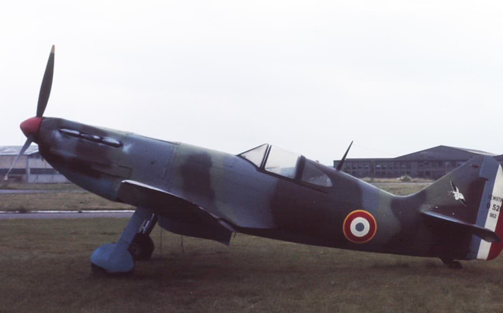

Cette fiche présente un chasseur français de la fin de l’entre‑deux‑guerres, représentatif de la modernisation tardive mais ambitieuse de l’Armée de l’Air en 1939–1940. Les informations ci‑dessous sont exposées dans un cadre strictement historique et documentaire, conformément aux exigences muséales de neutralité et de contextualisation.
Le Dewoitine D.520 est le chasseur le plus performant mis en service par la France en 1940 : vitesse élevée, excellente maniabilité, armement puissant et aérodynamique avancée. Conçu pour rivaliser avec les chasseurs étrangers les plus modernes, il arrive en unités trop tard pour être produit en nombre suffisant, mais démontre des performances remarquables durant la campagne de France.
Le Dewoitine D.520 est considéré comme le meilleur chasseur français de 1940. Moderne, rapide, maniable et bien armé, il rivalise avec le Messerschmitt Bf 109E et surpasse la plupart des chasseurs alliés de la même période.
Conçu par Émile Dewoitine, il entre en service tardivement mais démontre des performances remarquables durant la campagne de France.

Le D.520 possède une silhouette élancée, un radiateur ventral, une verrière plus large que celle du MS.406 et une aérodynamique très soignée. Son camouflage brun-vert avec dessous gris-bleu est typique de l’Armée de l’Air en 1940.
Durant la campagne de France, le D.520 démontre une excellente maniabilité et une vitesse comparable aux chasseurs allemands. Il est utilisé ensuite par Vichy, puis par les Forces françaises libres en Afrique du Nord.
Page du Musée HOP WW2 – Section chasseurs français